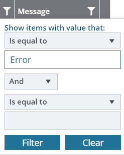

In Mind, the project forms are updated with the most recent data through data integration. The integration log pages in the Administration module display information on the integration activities of various external systems.
-
In the module menu, click Administration.
The ADMINISTRATION page is displayed.
-
In the navigation pane, expand the Integration folder, and then click the appropriate integration log.
The integration log list page is displayed.
The list page displays the details of integration logs, such as status, type, and the date the integration job is executed.
Administrator can view the following integration logs in the
Integration folder:
| Logs |
Description |
| Expense Logs |
Project fund logs are displayed. |
| Fund Transaction Logs |
Fund transaction logs are displayed. |
| Resource Logs |
Resource and title logs are displayed. |
| Task Logs |
Budget estimate logs are displayed. |
| Vendor Logs |
Vendor logs are displayed. |
-
Select the appropriate integration log, and then click View.
The selected integration log details page is displayed.
The TRANSACTION LOG section displays the integration record details and status.
In case of integration failure, the Status column is updated as Error, and the error
message is displayed in the Message column.
-
To filter the failed records, perform the following steps:
-
In the Status column, click
 .
.
A pop-up is displayed.
-
In the first text box, enter Error as a filter criterion, as shown in the following image:

-
Click Filter.
The records that failed during integration are listed with the appropriate error message.